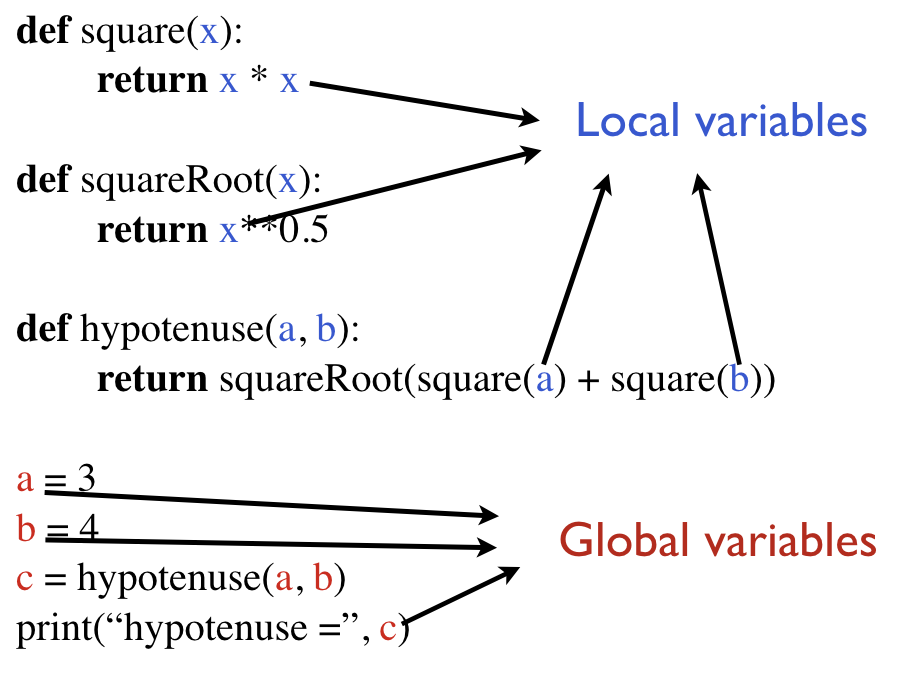

| Category | Operators |
| Arithmetic | +, -, *, /, //, **, % |
| Relational | <, <=, >=, >, ==, != |
| Assignment | +=, -=, *=, /=, //=, **=, %= |
| Logical | and, or, not |
print(3 * 2)
print(3 * "abc")
print(3 + 2)
print("abc" + "def")
print(3 + "def")
print("The / operator does 'normal' float division:")
print(" 5/3 =", ( 5/3))
print()
print("The // operator does integer division:")
print(" 5//3 =", ( 5//3))
print(" 2//3 =", ( 2//3))
print("-1//3 =", (-1//3))
print("-4//3 =", (-4//3))
What does n mod m represent?
The distance between the largest multiple of m that is no larger than n and n itself. So for example 8 % 3 = 2, because the largest multiple of 3 that is less than 8 is 6 and the distance between 6 and 8 is 2. Similarly -4 % 3 = 2 because the largest multiple of 3 that is less than -4 is -6. The distance between -6 and -4 is 2.
To get a feel for what how the mod operator behaves, take a look at the following cases:
print(" 6%3 =", ( 6%3))
print(" 5%3 =", ( 5%3))
print(" 2%3 =", ( 2%3))
print(" 0%3 =", ( 0%3))
print("-4%3 =", (-4%3))
print(" 3%0 =", ( 3%0))
Verify that (a%b) is equivalent to (a - (a//b)*b)
def mod(a, b): return a - (a//b)*b print(41%14, mod(41,14)) print(14%41, mod(14,41)) print(-32%9, mod(-32,9)) print(32%-9, mod(32,-9))
A couple of useful things you can do with the mod operator
x = 10 print(not(x == 10)) #prints False
y = 5 # Checking if y is a positive even number print(y > 0 and y%2 == 0) #prints False # Checking if y is a positive odd number print(y > 0 and y%2 == 1) #prints True
x = 10.2 y = 5 # Checking if one of x or y is an integer print(type(x) == int or type(y) == int) #prints True x = 10.2 y = 5.1 # Checking if one of x or y is an integer print(type(x) == int or type(y) == int) #prints False
Order precedence of boolean operators from low to high
def f(w):
return 10*w
def g(x, y):
return f(3*x) + y
def h(z):
return f(g(z, f(z+1)))
print(h(1))
def onesDigit(n):
return n%10
def largerOnesDigit(x, y):
return max(onesDigit(x), onesDigit(y))
print(largerOnesDigit(134, 672)) # 4
print(largerOnesDigit(132, 674)) # Still 4
A broken test function: Can you think why the following test function is not effective?
def onesDigit(n):
return n%10
def testOnesDigit():
print("Testing onesDigit()...", end="")
assert(onesDigit(5) == 5)
assert(onesDigit(123) == 3)
assert(onesDigit(100) == 0)
assert(onesDigit(999) == 9)
print("Passed!")
testOnesDigit() # Passed!
A better version
def onesDigit(n):
return n%10
def testOnesDigit():
print("Testing onesDigit()...", end="")
assert(onesDigit(5) == 5)
assert(onesDigit(123) == 3)
assert(onesDigit(100) == 0)
assert(onesDigit(999) == 9)
assert(onesDigit(-123) == 3) # Added this test
print("Passed!")
testOnesDigit() # Crashed! So the test function worked!
Not all variables are accessible from all parts of our program. Where a variable is accessible depend on how it is defined. We call the part of a program where a variable is accessible its scope .
A variable which is defined in the main body of a file is called a global variable. It will be visible throughout the file. Global variables can have unintended consequences because of their wide-ranging effects – that is why we should almost never use them.
A variable which is defined inside a function is local to that function. It is accessible from the point at which it is defined until the end of the function, and exists for as long as the function is executing.
Here's a picture to illustrate local and global variables:

Now consider the following examples:
def f(x):
print("In f, x =", x)
x += 5
return x
def g(x):
return f(x*2) + f(x*3)
print(g(2))
def f(x):
print("In f, x =", x)
x += 7
return round(x / 3)
def g(x):
x *= 10
return 2 * f(x)
def h(x):
x += 3
return f(x+4) + g(x)
print(h(f(1)))
# In general, you should avoid using global variables.
# You will even lose style points if you use them!
# Still, you need to understand how they work, since others
# will use them, and there may also be some very few occasions
# where you should use them, too!
g = 100
def f(x):
return x + g
print(f(5)) # 105
print(f(6)) # 106
print(g) # 100
g = 100
def f(x):
# If we modify a global variable, we must declare it as global.
# Otherwise, Python will assume it is a local variable.
global g
g += 1
return x + g
print(f(5)) # 106
print(f(6)) # 108
print(g) # 102